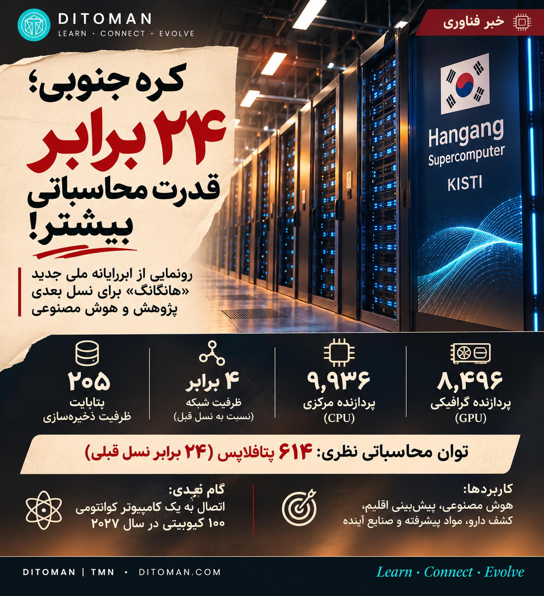

ابررایانه هانگانگ: کره جنوبی فقط یک کامپیوتر نساخت
Hangang, Korea's sixth national supercomputer: what it can do, who gets to use it, which skills it feeds, and what we can take from it.
614 PF theoretical peak, 24× Nurion
GPUs, including Nvidia GH200
About 15% for smaller companies
Cost, 382.5 billion won
اگر همهی ۸ میلیارد آدم روی زمین ثانیهای یک محاسبه انجام دهند، حدود ۲٫۴ سال طول میکشد تا به کاری برسند که این دستگاه روی کاغذ در یک ثانیه انجام میدهد. این دستگاه «هانگانگ» است؛ ابررایانهای که کره جنوبی ۲ نوامبر ۲۰۲۶ در مؤسسه KISTI در شهر دائجون رونمایی کرد. با هم ببینیم پشت این عدد چه خبر است.
۰۱. چه اتفاقی افتاد؟
هانگانگ ششمین ابررایانه ملی کره است و جای «نوریون» را میگیرد که از ۲۰۱۸ کار میکرد. مرحله آزمایشی با ۱۸۹ پروژه از ۶۴ مؤسسه در جریان است و خدمات رسمی نیمه دسامبر شروع میشود. منابع تاریخ را ۱۴ یا ۱۶ دسامبر نوشتهاند.
- پردازنده: ۸٬۴۹۶ پردازنده گرافیکی، از جمله Nvidia GH200، و ۹٬۹۳۶ پردازنده مرکزی
- توان نظری: ۶۱۴ پتافلاپس؛ ۲۴ برابر نوریون
- ذخیرهسازی و شبکه: ۲۰۵ پتابایت (۱۰ برابر) و شبکه ۴۰۰ گیگابیت بر ثانیه (۴ برابر)
- سازنده و هزینه: Hewlett Packard Enterprise؛ قرارداد ۳۸۲٫۵ میلیارد وون، حدود ۲۷۶ میلیون دلار
۰۲. راهی که ساده نبود
این پروژه قرار بود ۲۰۲۴ راه بیفتد. مناقصه چهار بار شکست خورد، چون رونق هوش مصنوعی قیمت GPU را بالا برد. بودجه اولیه ۲۹۲٫۹ میلیارد وون بود و سقف آن به ۴۴۸٫۲ میلیارد رسید؛ افزایشی حدود ۵۳٪. قرارداد نهایی می ۲۰۲۵ با مبلغ ۳۸۲٫۵ میلیارد وون بسته شد. درس این بخش روشن است: مسابقه هوش مصنوعی فقط بین شرکتها نیست و هزینه پروژههای ملی را هم عوض میکند.
۰۳. این قدرت به چه کسی میرسد؟
- حدود ۵۵٪: پژوهشگران دانشگاه، مؤسسهها و صنعت؛ از پروژههای بزرگ تا یک سطح تازه برای آزمودن ایدههای اولیه
- حدود ۳۰٪: پروژههای راهبردی ملی مثل K-Moonshot، برنامهای برای استفاده از هوش مصنوعی در ۱۲ مأموریت ملی تا ۲۰۳۵
- حدود ۱۵٪: شرکتهای کوچک و متوسط و استارتاپها، همراه با مشاوره و پشتیبانی فنی KISTI
نسل قبلی هم بینتیجه نبود: نوریون از ۱٬۷۳۰ پروژه پشتیبانی کرد و ۱٬۵۲۰ مقاله از آن بیرون آمد که ۷۰ تای آن در Nature، Science یا Cell بود.
۰۴. چه ظرفیتهایی باز میشود؟
- صنعت: تست تصادف خودرو و طراحی موتور، بدون ساخت نمونههای پرهزینه به تعداد زیاد
- انرژی: توسعه باتری و احتراق موشک
- اقلیم: پیشبینی آبوهوا و پژوهش اقلیمی
- هوش مصنوعی در علم: هدف K-Moonshot دو برابر کردن بهرهوری پژوهش تا ۲۰۳۰ است
۰۵. بازار کار چه میشود؟
گزارش مستقیمی درباره تعداد شغلهایی که هانگانگ میسازد ندیدیم. ولی بازار جهانی زیرساخت هوش مصنوعی نشانههای روشنی دارد. طبق راهنمای حقوق ۲۰۲۶ شرکت Kelly که درباره آمریکاست:
- ۹۰٪ اپراتورهای مرکز داده کمبود نیرو را محدودیت جدی میدانند
- کارفرمایان تقاضای بالا برای خنکسازی مایع (۹۲٪)، برق ولتاژ متوسط (۸۸٪) و کار با خوشههای GPU (۸۴٪) گزارش کردهاند
- میانگین حقوق مهندس هوش مصنوعی حدود ۱۷۵ هزار دلار و کارشناس فنی مرکز داده حدود ۱۱۲ هزار دلار برآورد شده است
اینها عددهای آمریکا هستند و برای جاهای دیگر قابل تعمیم نیستند. به برداشت ما، این نوع زیرساخت چند مسیر را پررنگ میکند: مهندس سیستم و HPC، برنامهنویس موازی، مهندس زیرساخت هوش مصنوعی، متخصص شبیهسازی مهندسی، مشاور فنی برای شرکتهای کوچک، و نیروی برق و خنکسازی.
۰۶. قدم بعدی: کوانتوم
KISTI میخواهد نیمه اول ۲۰۲۷ هانگانگ را به کامپیوتر کوانتومی ۱۰۰ کیوبیتی Tempo از شرکت IonQ وصل کند. این اتصال هنوز انجام نشده و کاربرد عملیاش باید آزموده شود.
سه نکته برای دقت
۶۱۴ پتافلاپس توان نظری است. رتبهبندی TOP500 با عدد اندازهگیریشده انجام میشود. در فهرست ژوئن ۲۰۲۶، نفر دهم (Alps) ۴۳۴٫۹ پتافلاپس اندازهگیریشده و ۵۷۴٫۸ پتافلاپس نظری داشت.
«ده ابررایانه برتر» فعلاً پیشبینی دولت کره است و فهرست جدید هنوز منتشر نشده است.
فاصله با جلوداران زیاد است: LineShine چین در ژوئن با ۲٬۱۹۸ پتافلاپس اول بود و Solstice آمریکا قرار است حدود ۱۲ برابر هانگانگ GPU داشته باشد.
۰۷. نگاه دیتومان
از این خبر فقط عدد ۲۴ نماند. کره قدرت پردازش را مثل یک زیرساخت عمومی تقسیم کرده؛ مثل جاده و برق، تا شرکت کوچک و دانشجو هم به آن برسند. سختافزار بهتنهایی پیشرفت نمیآورد؛ ارزش وقتی ساخته میشود که این توان به کشف، فناوری و محصول تبدیل شود.
برای ما هم نقطه امید اینجاست: ایران در ۲۰۲۱ سیمرغ را در دانشگاه امیرکبیر رونمایی کرد؛ حدود ۰٫۵۶ پتافلاپس با حدود ۴٫۵ میلیون دلار بودجه و طراحی مهندسان ایرانی، هرچند بخشی از سختافزار وارداتی بود. آن زمان از نسخهای بسیار قویتر هم حرف زده شد، ولی وضعیت امروزش را از منبع مستقل تأیید نکردیم.
شاید نتوانیم فردا ۸ هزار GPU بخریم، ولی این مهارتها را میشود از همین امروز یاد گرفت:
- لینوکس و Python
- زمانبندی کار روی خوشهها با Slurm
- پردازش موازی با MPI و CUDA
- آموزش توزیعشده مدلها با PyTorch
به نظر شما در ده سال آینده، قدرت کشورها بیشتر با منابع طبیعی سنجیده میشود یا با توان محاسباتی و دانش فنی؟ با هم دنبال میکنیم.
If all 8 billion people on Earth did one calculation per second, it would take about 2.4 years to match what this machine can do on paper in one second. South Korea unveiled Hangang, its sixth national supercomputer, at KISTI in Daejeon on 2 November 2026.
01. What happened
Hangang replaces Nurion, in service since 2018. A pilot with 189 projects from 64 institutions is under way, and full service starts in mid-December (sources give 14 or 16 December).
- Chips: 8,496 GPUs, including Nvidia GH200, and 9,936 CPUs
- Theoretical peak: 614 petaflops, 24 times Nurion
- Storage and network: 205 PB (10×) and 400 Gbps networking (4×)
- Builder and cost: Hewlett Packard Enterprise, 382.5 billion won (about $276M)
02. A hard road
It was due in 2024. The tender failed four times as the AI boom pushed up GPU prices. The budget ceiling rose from 292.9 to 448.2 billion won, about 53%, and the final contract was signed in May 2025.
03. Who gets to use it
- About 55%: researchers across academia, institutes and industry, including a new tier for testing early ideas
- About 30%: national strategic work such as K-Moonshot
- About 15%: small and mid-sized companies, with KISTI consulting and technical support
Nurion supported 1,730 projects and 1,520 papers, 70 of them in Nature, Science or Cell.
04. What it opens up
Crash simulation, engine design, battery development, rocket combustion, weather and climate work, and AI-driven science. K-Moonshot aims to double research productivity by 2030.
05. Jobs
We found no direct estimate of jobs created by Hangang. In the wider market, Kelly's 2026 US salary guide says 90% of data center operators call staffing shortages a critical constraint, and employers report high demand for liquid cooling (92%), medium-voltage electrical work (88%) and GPU cluster operations (84%). These are US figures. Our reading is that this kind of infrastructure favours HPC and systems engineers, parallel programmers, AI infrastructure engineers, simulation specialists, technical consultants for smaller firms, and power and cooling staff.
06. Next: quantum
KISTI plans to link Hangang with IonQ's 100-qubit Tempo in the first half of 2027. It has not happened yet, and practical uses remain to be tested.
Keeping the numbers honest
614 PF is a theoretical figure; TOP500 ranks on measured performance. In June 2026, No. 10 (Alps) measured 434.9 PF against 574.8 PF theoretical. A top-10 place is still the Korean government's forecast. China's LineShine led in June at 2,198 PF, and the US Solstice is planned with about 12 times Hangang's GPU count.
07. The Ditoman view
Korea is sharing computing like public infrastructure, so small firms and students can reach it too. Hardware alone is not progress; value comes when it turns into discoveries and products. Iran unveiled Simorgh at Amirkabir University in 2021, at about 0.56 PF on a budget of about $4.5M, designed by Iranian engineers with some imported hardware. A far stronger successor was announced then, but we could not independently confirm its status. We may not buy 8,000 GPUs tomorrow, but Linux, Python, Slurm, MPI, CUDA and distributed PyTorch can be learned today.
Sources • منابع
- Korea Times
- MoneyToday
- Aju Press
- Korea JoongAng Daily
- ZDNet Korea
- Supple (resource allocation)
- TOP500, June 2026
- Kelly 2026 Data Center Salary Guide
- Al Jazeera on Simorgh
تصویر کارت نمادین است و عکس واقعی دستگاه نیست. • The card image is illustrative.